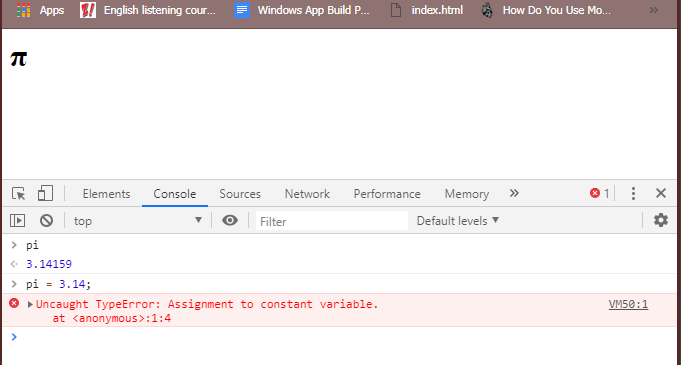
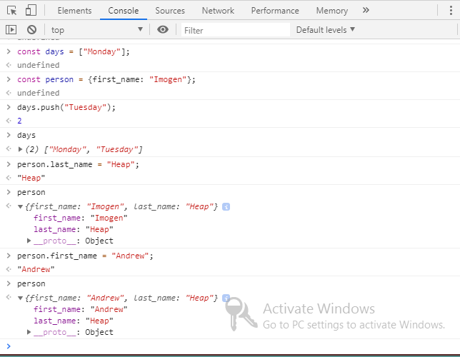

What You'll Learn
Welcome to Getting Started With ES2015
ES 2015 ကိုကျွန်တော်တို့စပြီးလေ့လာသွားမှာဖြစ်ပါတယ်။JavaScript က evolving နဲ့ changing ဖြစ်နေတဲ့ language တစ်ခုဖြစ်ပါတယ်။အမြဲတမ်း update ဖြစ်နေပြီးတော့တိုးတက်နေတာပဲဖြစ်ပါတယ်။ECMAScript 5 က web browsers တွေမှာအချိန်အကြားကြီးထောက်ပံ့ပေးထားတဲ့ JavaScript ရဲ့ version ပဲဖြစ်ပါတယ်။ကျွန်တော်တို့ javascript basics တွေ loops တွေ arrays တွေနဲ့ objects courses တွေကိုရှေ့ကသင်ခန်းစာတွေမှာလေ့လာခဲ့ပြီးဖြစ်ပါတယ်။ES 2015 ကို ES 6 လို့လည်းခေါ်ပြီးတော့ programmers တွေအများဆုံးအသုံးပြုပြီး browser တွေကိုကောင်းမွန်စွာထောက်ပံ့ပေးနိုင်တဲ့ javaScript language ရဲ့ version အသစ်တစ်ခုလည်းဖြစ်ပါတယ်။ကျွန်တော်တို့လေ့လာခဲ့တာတွေကိုပြန်ကြည့်မယ်ဆိုရင် loops, arrays, ES 2015 ရဲ့ variable တည်ဆောက်ပုံတွေပါဝင်တဲ့ object courses တွေကိုလေ့လာခဲ့ပြီးဖြစ်ပါတယ်။နောက်ထပ်ထပ်ပြီးလေ့လာရမှာကတော့ string တွေကိုတည်ဆောက်တာနဲ့ concatenate ပြုလုပ်ဖို့အတွက်ဖြစ်ပြီးနောက်ထပ်မတူညီတဲ့နည်းလမ်းကတော့ arrow function နဲ့ function တွေကိုရေးတာပဲဖြစ်ပါတယ်။
Declaring Variables in JavaScript
JavaScript ရဲ့ variable တွေကိုကြေငြာဖို့သို့မဟုတ် create ပြုလုပ်ဖို့အတွက် var ဆိုတဲ့ keywords တစ်ခုကိုပဲအချိန်အကြာကြီးအသုံးပြုခဲ့ကြပါတယ်။programmers တွေအများစုကတော့ အဲ့ဒီ method ကိုလေ့လာပြီးတော့အချိန်အကြာကြီးအသုံးပြုခဲ့ပါတယ်။ဒါပေမယ့် var ကိုအသုံးပြုတဲ့အခါမှာအချို့အပြုအမူတွေကပြသနာတွေဖြစ်နိုင်ပြီးတော့မဖြေရှင်းနိုင်တာတွေလည်းဖြစ်နိုင်ပါတယ်။အဲ့တာကြောင့်
javaScript programming language developer တွေက variable တွေကို create ပြုလုပ်ဖို့အတွက်နည်းလမ်းအသစ်တစ်ခုကိုမိတ်ဆက်ပေးခဲ့ပါတယ်။JavaScript ရဲ့ ၆ခုမြောက် version ကို ES 2015 (or) ECMAScript 2015 လို့ခေါ်ပြီးတော့ key words အသစ်နှစ်ခုကိုမိတ်ဆက်ခဲ့ပါတယ်။အဲ့ဒီနှစ်ခုကတော့
Const နဲ့ let ပဲဖြစ်ပါတယ်။keywords နှစ်ခုကဘယ်လိုအလုပ်လုပ်လဲဆိုတာကိုလေ့လာသွားမှဖြစ်ပါတယ်။ပထမကျွန်တော်တို့ const တွေ let တွေက var နဲ့တူတဲ့အလုပ်လုပ်ပုံတွေကိုဖော်ပြပေးသွားမှာဖြစ်ပါတယ်။စပြီးရေးတဲ့အခါမှာကျွန်တော်တို့အသုံးပြုမယ့် keyword
တစ်ခုကိုရေးပြီးတော့ ကျွန်တော်တို့သတ်မှတ်ချင်တဲ့နာမည်နဲ့ variable name ကိုပေးခဲ့ရပါမယ်။အဲ့ဒီနောက်မှာတော့ equal sign လိုက်ပြီး variable ထဲကိုထည့်မည့် value ကိုရေးပေးရမှာပဲဖြစ်ပါတယ်။
var message = "Hello";
const pi = 3.14159;
let score = 0;
Creating Unchanging Variables With const
ပထမ method မှာတော့ variable တစ်ခုကို const keyword အဖြစ်တည်ဆောက်တဲ့အခါမှာဆုံးဖြတ်သင့်တာပဲဖြစ်ပါတယ်။အဲ့တာက variables တွေကြေငြာခြင်းအတွက်ကောင်းမွန်တဲ့ရွေးချယ်မှုတစ်ခုပဲဖြစ်ပါတယ်။const ကတော့ constant ရဲ့အတိုကောက်ပဲဖြစ်ပါတယ်။ဆိုလိုတာကတော့ variable တွေရဲ့တန်ဖိုးတွေကမပြောင်းလဲပဲ
constant အဖြစ်ကျန်ရှိနေမှာပဲဖြစ်ပါတယ်။ဥပမာ const pi က 3.14159 နဲ့ညီမျှပါတယ်။ကျွန်တော်တို့ရဲ့ code တွေထဲမှာအခြားမကိုက်ညီတဲ့အရာတွေကို assign ပြုလုပ်ထားပြီး variables တွေပေါ်မှာ overwrite ပြန်လုပ်တဲ့အခြေအနေမျိုးတွေကို const ကကာကွယ်ပေးတာပဲဖြစ်ပါတယ်။အခြားနည်းလမ်းနဲ့ပြောမယ်ဆိုရင်တော့
constant တွေကိုကျွန်တော်တို့တည်ဆောက်ပြီးတဲ့အခါမှာနောက်ထပ်အခြား value တွေကိုကျွန်တော်တို့ထပ်ပြီးမထည့်နိုင်တော့ပါဘူး။အောက်ပါဥပမာပုံထဲမှာကျွန်တော်တို့ const တွေကို overwrite လုပ်လို့မရဘူးဆိုတာကိုဖော်ပြထားတာပဲဖြစ်ပါတယ်။အဲ့တာကြောင့်ကျွန်တော်တို့က
variable တွေကိုကြေငြာတဲ့အခါမှာအသုံးပြုမယ့်အပေါ်မှာမူတည်ပြီးရွေးချယ်အသုံးပြုသင့်ပါတယ်။ဥပမာအနေနဲ့ tax rates, dimensions, user interface components တွေနဲ့ product prices တွေမှာကျွန်တော်တို့ variables တွေကိုရွေးချယ်ပြီးအသုံးပြုသင့်တာပဲဖြစ်ပါတယ်။Page
ပေါ်မှာရှိတဲ့ elements တွေကို select ပြုလုပ်တဲ့အခါမှာလည်းကျွန်တော်တို့ constant တွေကိုပဲအသုံးပြုသင့်ပါတယ်။

functions တွေကို variable ထဲမှာ assign ပြုလုပ်တဲ့အခါမှာလည်း constant ကိုအသုံးပြုသင့်ပါတယ်။constant တွေထဲမှာမည်သည့် value ကိုမဆို assigned ပြုလုပ်နိုင်ပြီး program ထဲမှာပြောင်းလဲသွားမယ့် value တွေကိုအသုံးပြုမယ်ဆိုရင်တော့မကောင်းတဲ့ရွေးချယ်မှုပဲဖြစ်ပါတယ်။constant
တွေကproblem တွေကို fix လုပ်တဲ့နေရာမှာကူညီပေးပါတယ်။ပြီးတော့ javaScript program ထဲမှာလွယ်ကူစွာပေါလာနိုင်ပါတယ်။ကျွန်တော်တို့အောက်မှာရေးပြထားတဲ့ ဥပမာထဲမှာဆိုရင် function က global scope ထဲမှာရှိတဲ့ name variable ပေါ်မှာ overwrite ပြုလုပ်ပေးသွားမှာဖြစ်ပါတယ်။အဲ့တာကပြသနာတစ်ခုဖြစ်ပြီး၎င်းက
pop up လုပ်နိုင်ပါတယ်။catch ပြုလုပ်ဖို့လည်းခက်ခဲနေပါလိမ့်မယ်။ဒါပေမယ့်လည်း constant တွေကိုအသုံးပြုရင်ကျွန်တော်တို့ကိုကူညီနိုင်ပါလိမ့်မယ်။အဲ့တာကြောင့်ဥပမာထဲမှာ name ဆိုတဲ့ variable တွေကို const နဲ့ပြောင်းပြီးကြေငြာပေးရမှာပဲဖြစ်ပါတယ်။ကျွန်တော်တို့
ဖော်ပြထားတဲ့ဥပမာကို file အသစ်တစ်ခုထဲမှာယူ run ပြီး console tag ထဲမှာအဖြေကိုကြည့်ရမှာဖြစ်ပါတယ်။
<!-- Before using const -->
<script>
var name = "MYO";
function createFullName(fName, lName) {
name = fName + " " + lName;
console.log(name);
}
console.log(name);
createFullName("Myo", "Min");
</script>
<!-- After using const -->
<script>
const name = "MYO";
function createFullName(fName, lName) {
const name = fName + " " + lName;
console.log(name);
}
console.log(name);
createFullName("Myo", "Min");
</script>
Using Constants with Arrays and Objects
Constant variable တွေထဲမှာမည်သည့် values တွေပဲဖြစ်ဖြစ် number တွေ string တွေပဲဖြစ်ဖြစ်အစားထိုးပြီးအသုံးမပြုနိုင်ဘူးဆိုတာကိုကျွန်တော်တို့မြင်တွေ့ခဲ့ရပြီးဖြစ်ပါတယ်။strings တွေ numbers တွေ booleans တွေ objects တွေနဲ့မတူတဲ့ methods နဲ့ properties တွေလည်းရှိပြီး
objects သို့မဟုတ် array တွေကို modify ပြုလုပ်နိုင်ပါတယ်။const တွေက modified ပြုလုပ်ထားတဲ့ objects တွေ arrays တွေလိုမျိုးရှုပ်ထွေးတဲ့ objects တွေကိုတော့ကာကွယ်မပေးနိုင်ပါဘူး။အဲ့တာတွေကို reassigned သို့မဟုတ် overwritten တွေကိုပြီးမြောက်အောင်လုပ်ဆောက်ဖို့အတွက်တော့ထောက်ပံ့ပေးပါတယ်။အဲ့တာကြောင့်ကျွန်တော်တို့က
reassigned ပြန်ပြီးပြုလုပ်နိုင်ပါတယ်။ဥပမာထဲမှာကျွန်တော်တို့ person ရဲ့ first_name ကိုပြောင်းပြထားတာပဲဖြစ်ပါတယ်။

Defining a Variable with let
Let keyword ကတော့ variable တွေကို re-assign ပြုလုပ်ဖို့ရန်အတွက်အသုံးပြုတာပဲဖြစ်ပါတယ်။သူက var ရဲ့အလုပ်လုပ်ပုံနဲ့ပုံစံတူပါတယ်။ဒါပေမယ့်မတူညီတဲ့အချက်ကတော့ let မှာ block level scoping ရှိတာပဲဖြစ်ပါတယ်။ကျွန်တော်တို့ ဥပမာထဲက let ဆိုတဲ့နေရာတွေမှာ var တွေ const တွေအစားထိုးပြီးတော့ run ကြည့်နိုင်ပါတယ်။const ကိုအသုံးပြုခဲ့ရင်တော့ error တွေ့ရမှာဖြစ်ပြီး reassigned မပြုလုပ်နိုင်ပါဘူး။
<script>
const person = {
first_name: "Andrew",
role: "Teacher"
}
function personDescription(person) {
let description = person.first_name;
if (person.role) {
description = description + "is a ";
description = description + person.role;
}
console.log(description);
}
personDescription(person);
</script>
Using let with for Loops
Let keyword ကအထူးသဖြင့် for loops တွေမှာအသုံးဝင်ပါတယ်။counter ကိုသတ်မှတ်ဖို့အတွက် var ကို for loop ထဲမှာအသုံးပြုတဲ့အခါမှာရှုပ်ထွေးမှုအချို့တွေရှိပြီးတော့မမျှော်လင့်တဲ့ outcomes တွေလည်းရှိလာနိုင်ပါတယ်။ကျွန်တော်တို့ဖော်ပြထားတဲ့ဥပမာထဲမှာတော့ button တစ်ခုချင်းဆီကိုနှိပ်ရင်
BUTTON ရဲ့နံပတ်ကိုဖော်ပြပေးမှာပဲဖြစ်ပါတယ်။အဲ့တာကြောင့်ကျွန်တော်တို့က for loop ကိုအသုံးပြုပြီးရေးပေးထားရပါမယ်။"i" ဆိုတဲ့စကားလုံးကိုကျွန်တော်တို့က for loop အတွင်းထဲမှာ var နဲ့သတ်မှတ်ခဲ့မယ်ဆိုရင်အဲ့တာကို global scope လို့ခေါ်ပါတယ်။အဲ့ဒီအခါမှာတော့
i ရဲ့တန်ဖိုးကိုကျွန်တော်တို့ထုပ်လိုက်တဲ့အခါမှာအတူတူတွေထွက်ပေးနေမှာပဲဖြစ်ပါတယ်။အဲ့တာကြောင့်ကျွန်တော်တို့က local scope အဖြစ်ကြေငြာပေးဖို့လိုအပ်ပါတယ်။Let ဆိုတဲ့ keyword ကိုကျွန်တော်တို့အသုံးပြုမယ်ဆိုရင်တော့ local ထဲမှာပဲသတ်မှတ်နိုင်မှာပဲဖြစ်ပါတယ်။အဲ့တာကကျွတာ်တို့
for loop တစ်ခုခြင်းဆီအတွက် localized ပြုလုပ်ပြီးသတ်မှတ်ပေးမှာပဲဖြစ်ပါတယ်။
<html>
<head>
<title>buttons - let and Const</title>
</head>
<body>
<h1>Buttons</h1>
<button>Button 0</button>
<button>Button 1</button>
<button>Button 2</button>
<button>Button 3</button>
<button>Button 4</button>
<button>Button 5</button>
<button>Button 6</button>
<button>Button 7</button>
<button>Button 8</button>
<button>Button 9</button>
<script>
const buttons = document.getElementsByTagName("button");
for (let i = 0; i < buttons.length; i++) {
const button = buttons[i];
button.addEventListener("click", function() {
alert("Button " + i + "Pressed");
});
}
</script>
</body>
</html>
Basic and Multiple Line Strings
Template literals တွေကိုဘယ်လိုဖန်တီးတယ်ဆိုတာကိုကျွန်တော်တို့လေ့လာသွားမှာပဲဖြစ်ပါတယ်။Template literals တွေက javaScript ထဲမှာ strings တွေကိုတည်ဆောက်နိုင်ပါတယ်။ဒါပေမယ့်ကျွန်တော်တို့တွေ quote string တွေကိုအသုံးပြုတာမကြိုက်တဲ့အချက်ကတော့ template literals တွေမှာမှားနေတဲ့အကြောင်းတွေကိုသိတဲ့ကြီးမားတဲ့ features အချို့ရှိပါတယ်။ကျွန်တော်တို့တွေ single quote တွေ double quote တွေအသုံးပြုပြီးတော့ string တွေကိုဘယ်လို create ပြုလုပ်ရမယ်ဆိုတာကိုသိပြီးသားဖြစ်ပါတယ်။နောက်ပြီး template literals တွေကိုအသုံးပြုတဲ့နည်းတွေနဲ့တူတဲ့ပုံစံရှိပြီးတော့ template literals မှာတော့ backticks ကိုအသုံးပြုပါတယ်။backtick character က keyboard ပေါ်မှာ upper left hand corner မှာရှိပါတယ်။tilde key အဖြစ်လည်းအသုံးပြုလို့ရပါတယ်။အဲ့တာတွေနဲ့ ကျွန်တော်တို့က multiline string တွေကိုတည်ဆောက်နိုင်ပါတယ်။ကျွန်တော်တို့ဥပမာထဲမှာရေးပြထားသလိုပဲ single quote တွေ Double quote တွေကိုအများကြီးရေးပြီး multiple string line တွေကိုတည်ဆောက်နိုင်ပြီး template literal မှာတော့multiple line ပြုလုပ်ချင်တဲ့ string တွေအားလုံးကိုအစနဲ့အဆုံးမှာ အဖွင့် quote နဲ့ အပိတ် quote ထည့်ပေးရုံပဲဖြစ်ပါတယ်။
const fruitList =
"" +
"- Kiwi
" +
"- Lime
" +
"- Pineapple
" +
"
";
const vegetableList =
`
- Potato
- Onion
- Broccoli
`;
document.querySelector('.fruit').innerHTML = fruitList;
document.querySelector('.vegetables').innerHTML = vegetableList;
String Interpolation
JavaScript ထဲမှာမကြာခနဆိုသလို value ကအခုအထိတည်ရှိမနေဘူးဆိုတာကိုပြဖို့လိုအပ်ပါတယ်။ဥပမာကျွန်တော်တို့ရဲ့ site ထဲကိုဝင်ကြည့်တဲ့အခါမှာ user ကိုနှုတ်ဆက်တဲ့စကားတွေပြောလေ့ရှိပါတယ်။user name တွေကအချိန်တွေရဲ့ ahead ကိုမသိနိုင်ပါဘူး။အဲ့တာကြောင့်ကျွန်တော်တို့ရဲ့ program ထဲမှာ hello ,nice to see you စတဲ့ကျွန်တော်တို့ပေးချင်တဲ့ text တွေကို combine ပြုလုပ်ပြီး store ပြုလုပ်ထားဖို့လိုအပ်ပါလိမ့်မယ်။နောက်ပြီးကျွန်တော်တို့က login ပြုလုပ်တဲ့ user name တွေကိုပါယူပြီးပောင်းစပ်ပေးရမှာဖြစ်ပါတယ်။အခြား languages တွေမှာတော့ string ထဲမှာ placeholder တွေကိုအသုံးပြုပါတယ်။အဲ့တာတွေကနောက်ကျပြီးအကဲဖြတ်နိုင်ပါတယ်။အဲ့တာကို Interpolation လို့ခေါ်ပါတယ်။Template literals တွေနဲ့ javaScript တွေကလည်းပဲ interpolate ပြုလုပ်နိုင်ပါတယ်။syntax တွေကတော့ odd တွေကိုပထမဆုံးမြင်နိုင်မှာပဲဖြစ်ပါတယ်။အဲ့တာတွေနဲ့ လွယ်လွယ်ကူကူဖတ်နိုင်ပြီးအလုပ်လုပ်နိုင်ပါတယ်။dollar sign ကို curly brackets နဲ့တွဲပြီးအသုံးပြုထားတာကတော့ template literal ထဲမှာ dynamic values တွေအဖြစ်မှတ်သားဖို့ရန်အသုံးပြုတာပဲဖြစ်ပါတယ်။Program တွေ run တဲ့အခါမှာတော့ curly brackets တွေရဲ့ content တွေကအကဲဖြတ်ပြီးတော့ string ထဲကိုနေရာချထားပေးပါတယ် သို့မဟုတ် interpolate ပြလုပ်ပေးပါတယ်။ကျွန်တော်တို့ဥပမာထဲမှာတော့ multiple strings တွေကို template literal တွေထဲမှာ interpolate ပြုလုပ်ပြထားတာပဲဖြစ်ပါတယ်။
function like(thing) {
return 'I like ' + thing;
}
function love(thing) {
return `I love
$ { thing }`;
}
const sentence = `<p>` + like('apples') + `, but ` + love('oranges') + `</p>`;
document.querySelector(`.interpolation`).innerHTML = sentece;
Basic Arrow Syntax
ECMAScript 2015 မှာစတင်ပြီးမိတ်ဆက်ခဲ့တဲ့ function တွေရေးဖို့အတွက် method တစ်ခုကိုကျွန်တော်တို့လေ့လာသွားမှာဖြစ်ပါတယ်။အဲ့ဒီ syntax ကို JavaScript developer တွေကကျယ်ပြန့်စွာလက်ခံပြီးအသုံးပြုခဲ့ကြပါတယ်။အဲ့တာကတော့ arrow syntax ဖြစ်ပြီးလိုရင်းတိုရှင်းရေးနိုင်ပါတယ်။Arrow function syntax ကcallbacks တွေကိုအသုံးပြုတဲ့အခါမှာ scope တွေပတ်လည်မှာ javaScript gotchas တွေကိုအများဆုံးအသုံးပြုတာတွေကိုဖြေရှင်းပေးနိုင်ပါတယ်။ECMAScript 2015 မတိုင်ခင်မှာယေဘူရအားဖြင့် javaScript ထဲမှာ function တွေကို one of two ways တွေနဲ့ကြေငြာခဲ့ကြပါတယ်။function decleration တွေ function expression တွေလိုမျိုးပဲဖြစ်ပါတယ်။function decleration တွေမှာ keyword function တွေနဲ့စတင်ပြီးတော့ name ကိုတော့ကျွန်တော်တို့နှစ်သက်ရာပေးနိုင်ပါတယ်။အစုံလိုက်ရှိတဲ့ parentheses တွေနဲ့ curly braces တွေထဲမှာတော့ function တွေ run တဲ့အချိန်ှမှာ execute ပြုလုပ်ချင်တဲ့ block of code တွေပါဝင်မှာပဲဖြစ်ပါတယ်။function decleration တွေကို funciton expression တွေပြန်ပြီးရေးတဲ့အခါမှာ arrow function တွေရေးနည်းနဲ့ပုံစံတူပါတယ်။function expression ထဲမှာဆိုရင် variable ထဲကို function တွေကို assign ပြုလုပ်တာပဲဖြစ်ပါတယ်။variable ကို const ပြုလုပ်ဖို့အတွက်တော့ const ဆိုတာကိုအသုံးပြုပြီးကြေငြာနိုင်ပါတယ်။ function expression ကို arrow function expression အဖြစ်ပြောင်းဖို့အတွက် function ဆိုတဲ့ keyword ကိုဖယ်ရှားဖို့လိုအပ်ပါတယ်။parenthesis ရဲ့နောက်မှာတော့ equal sign နဲ့ greater than sign ဆိုတဲ့ arrow sign ကိုထည့်ပေးရမှာပဲဖြစ်ပါတယ်။
const sayName = () => {
const message = "My name is " + name;
console.log(message);
}
const sayBye = () => {
console.log("Bye " + name);
}
Adding Arguments To Arrow Functions
ကျွန်တော်တို့က argument တွေမပါပဲနဲ့ arrow function တွေကိုကျွန်တော်တို့ရေးခဲ့ဘူးပါတယ်။single argument ရဲ့ရေးနည်းကတော့ no arguments ရေးနည်းနဲ့တစ်ပုံစံထဲပဲဖြစ်ပါတယ်။arrow function တွေက multiple arguments တွေနဲ့ဘယ်လိုအလုပ်လုပ်သလဲဆိုတာကိုကျွန်တော်တို့ထပ်ပြီးလေ့လာရပါမယ်။ multiple arguments တွေမှာလည်း arrow function တွေရေးနည်းကတော့အတူတူတွေပဲဖြစ်ပါတယ်။ ပထမကျွန်တော်တို့က variable တွေကိုသတ်မှတ်ပေးခဲ့ရမှာပဲဖြစ်ပါတယ်။နောက်ပြီး function ဆိုတဲ့ keyword နဲ့ name ကိုဖြုတ်ပေးခဲ့ရမှာဖြစ်ပါတယ်။အဲ့ဒီနေရမှာ arrow sign တွေအစားထိုးပေးရမှာဖြစ်ပါတယ်။ဥပမာထဲမှာရေးထားတာကိုထပ်ပြီးလေ့လာနိုင်ပါတယ်။နောက်ထပ်သင်ခန်းစာမှာကျန်ရှိနေတဲ့အသေးစိတ်အချက်အလက်တွေကိုကျွန်တော်တို့ထပ်ပြီးပြောပြသွားမှာဖြစ်ပါတယ်။
const square = (x) => {
return x * x;
}
const multiply = (x, y) => {
return x * y;
}
Concise Arrow Function Syntax
arrow functions တွေဟာ function declarations တွေထက်အားနည်းပါတယ်။ဒါပေမယ့်သူတို့ကပိုပြီးတော့ရှင်းလင်းတိကျပါတယ်။ကျွန်တော်တို့ arrow function တွေကို single argument function တွေမှာအသုံးပြုတဲ့အခါမှာတော့ parenthesis တွေထည့်ပေးဖို့မလိုအပ်ပါဘူး။ဒါပေမယ့် multiple argument တွေမှာတော့ parenthesis တွေဖြုတ်ပေးလို့မရပါဘူး။ single argument တွေမှာပဲရမှာဖြစ်ပါတယ်။ကျွန်တော်တို့တွေက code line တစ်ခုထဲကိုပဲရေးထားရင်တော့ return keyword ကိုထည့်ပေးစရာမလိုအပ်ပါဘူး။အဲ့တာကအမြဲတမ်း return keyword ကိုမသုံးပဲ statement တွေရဲ့ value တွေကို return ပြန်ပေးမှာပဲဖြစ်ပါတယ်။နောက်ပြီး single argument တွေမှာဆိုရင် syntax တွေကိုလျှော့ချဖို့အတွက်ကျွန်တော်တို့မှာ code line တစ်ခုထဲရှိတဲ့အခါမှာ curly braces တွေကိုဖယ်ရှားနိုင်ပါတယ်။code line တွေအများကြီးရှိရင်တော့ဖယ်လို့မရပါဘူး။ modern browser တွေအားလုံးက arrow function syntax တွေကိုထောက်ပံ့ပေးနိုင်ပြီးကျွန်တော်တို့ကလည်းနားလည်ထားပြီးကိုယ်တိုင်ရေးတက်ဖို့လိုအပ်ပါတယ်။
//No argument
const sayBye = () => console.log("Bye " + name);
//Single argument
const cube = x => square(x) * x;
//Multiple arguments
const subtract = (a, b) => a - b;


Can Request Example project File